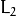

Denoising
fastNlMeansDenoising
Perform image denoising using Non-local Means Denoising algorithm http://www.ipol.im/pub/algo/bcm_non_local_means_denoising/
with several computational optimizations. Noise expected to be a gaussian white noise
-
C++: void fastNlMeansDenoising(InputArray src, OutputArray dst, float h=3, int templateWindowSize=7, int searchWindowSize=21 )
-
Python: cv2.fastNlMeansDenoising(src[, dst[, h[, templateWindowSize[, searchWindowSize]]]]) → dst
| Parameters: |
- src – Input 8-bit 1-channel, 2-channel or 3-channel image.
- dst – Output image with the same size and type as src .
- templateWindowSize – Size in pixels of the template patch that is used to compute weights. Should be odd. Recommended value 7 pixels
- searchWindowSize – Size in pixels of the window that is used to compute weighted average for given pixel. Should be odd. Affect performance linearly: greater searchWindowsSize - greater denoising time. Recommended value 21 pixels
- h – Parameter regulating filter strength. Big h value perfectly removes noise but also removes image details, smaller h value preserves details but also preserves some noise
|
|---|
This function expected to be applied to grayscale images. For colored images look at fastNlMeansDenoisingColored.
Advanced usage of this functions can be manual denoising of colored image in different colorspaces.
Such approach is used in fastNlMeansDenoisingColored by converting image to CIELAB colorspace and then separately denoise L and AB components with different h parameter.
fastNlMeansDenoisingColored
Modification of fastNlMeansDenoising function for colored images
-
C++: void fastNlMeansDenoisingColored(InputArray src, OutputArray dst, float h=3, float hColor=3, int templateWindowSize=7, int searchWindowSize=21 )
-
Python: cv2.fastNlMeansDenoisingColored(src[, dst[, h[, hColor[, templateWindowSize[, searchWindowSize]]]]]) → dst
| Parameters: |
- src – Input 8-bit 3-channel image.
- dst – Output image with the same size and type as src .
- templateWindowSize – Size in pixels of the template patch that is used to compute weights. Should be odd. Recommended value 7 pixels
- searchWindowSize – Size in pixels of the window that is used to compute weighted average for given pixel. Should be odd. Affect performance linearly: greater searchWindowsSize - greater denoising time. Recommended value 21 pixels
- h – Parameter regulating filter strength for luminance component. Bigger h value perfectly removes noise but also removes image details, smaller h value preserves details but also preserves some noise
- hForColorComponents – The same as h but for color components. For most images value equals 10 will be enought to remove colored noise and do not distort colors
|
|---|
The function converts image to CIELAB colorspace and then separately denoise L and AB components with given h parameters using fastNlMeansDenoising function.
fastNlMeansDenoisingMulti
Modification of fastNlMeansDenoising function for images sequence where consequtive images have been captured in small period of time. For example video. This version of the function is for grayscale images or for manual manipulation with colorspaces.
For more details see http://citeseerx.ist.psu.edu/viewdoc/summary?doi=10.1.1.131.6394
-
C++: void fastNlMeansDenoisingMulti(InputArrayOfArrays srcImgs, OutputArray dst, int imgToDenoiseIndex, int temporalWindowSize, float h=3, int templateWindowSize=7, int searchWindowSize=21 )
-
Python: cv2.fastNlMeansDenoisingMulti(srcImgs, imgToDenoiseIndex, temporalWindowSize[, dst[, h[, templateWindowSize[, searchWindowSize]]]]) → dst
| Parameters: |
- srcImgs – Input 8-bit 1-channel, 2-channel or 3-channel images sequence. All images should have the same type and size.
- imgToDenoiseIndex – Target image to denoise index in srcImgs sequence
- temporalWindowSize – Number of surrounding images to use for target image denoising. Should be odd. Images from imgToDenoiseIndex - temporalWindowSize / 2 to imgToDenoiseIndex - temporalWindowSize / 2 from srcImgs will be used to denoise srcImgs[imgToDenoiseIndex] image.
- dst – Output image with the same size and type as srcImgs images.
- templateWindowSize – Size in pixels of the template patch that is used to compute weights. Should be odd. Recommended value 7 pixels
- searchWindowSize – Size in pixels of the window that is used to compute weighted average for given pixel. Should be odd. Affect performance linearly: greater searchWindowsSize - greater denoising time. Recommended value 21 pixels
- h – Parameter regulating filter strength for luminance component. Bigger h value perfectly removes noise but also removes image details, smaller h value preserves details but also preserves some noise
|
|---|
fastNlMeansDenoisingColoredMulti
Modification of fastNlMeansDenoisingMulti function for colored images sequences
-
C++: void fastNlMeansDenoisingColoredMulti(InputArrayOfArrays srcImgs, OutputArray dst, int imgToDenoiseIndex, int temporalWindowSize, float h=3, float hColor=3, int templateWindowSize=7, int searchWindowSize=21 )
-
Python: cv2.fastNlMeansDenoisingColoredMulti(srcImgs, imgToDenoiseIndex, temporalWindowSize[, dst[, h[, hColor[, templateWindowSize[, searchWindowSize]]]]]) → dst
| Parameters: |
- srcImgs – Input 8-bit 3-channel images sequence. All images should have the same type and size.
- imgToDenoiseIndex – Target image to denoise index in srcImgs sequence
- temporalWindowSize – Number of surrounding images to use for target image denoising. Should be odd. Images from imgToDenoiseIndex - temporalWindowSize / 2 to imgToDenoiseIndex - temporalWindowSize / 2 from srcImgs will be used to denoise srcImgs[imgToDenoiseIndex] image.
- dst – Output image with the same size and type as srcImgs images.
- templateWindowSize – Size in pixels of the template patch that is used to compute weights. Should be odd. Recommended value 7 pixels
- searchWindowSize – Size in pixels of the window that is used to compute weighted average for given pixel. Should be odd. Affect performance linearly: greater searchWindowsSize - greater denoising time. Recommended value 21 pixels
- h – Parameter regulating filter strength for luminance component. Bigger h value perfectly removes noise but also removes image details, smaller h value preserves details but also preserves some noise.
- hForColorComponents – The same as h but for color components.
|
|---|
The function converts images to CIELAB colorspace and then separately denoise L and AB components with given h parameters using fastNlMeansDenoisingMulti function.
cuda::nonLocalMeans
Performs pure non local means denoising without any simplification, and thus it is not fast.
-
C++: void cuda::nonLocalMeans(const GpuMat& src, GpuMat& dst, float h, int search_window=21, int block_size=7, int borderMode=BORDER_DEFAULT, Stream& s=Stream::Null())
| Parameters: |
- src – Source image. Supports only CV_8UC1, CV_8UC2 and CV_8UC3.
- dst – Destination image.
- h – Filter sigma regulating filter strength for color.
- search_window – Size of search window.
- block_size – Size of block used for computing weights.
- borderMode – Border type. See borderInterpolate() for details. BORDER_REFLECT101 , BORDER_REPLICATE , BORDER_CONSTANT , BORDER_REFLECT and BORDER_WRAP are supported for now.
- stream – Stream for the asynchronous version.
|
|---|
cuda::FastNonLocalMeansDenoising
-
class cuda::FastNonLocalMeansDenoising
class FastNonLocalMeansDenoising
{
public:
//! Simple method, recommended for grayscale images (though it supports multichannel images)
void simpleMethod(const GpuMat& src, GpuMat& dst, float h, int search_window = 21, int block_size = 7, Stream& s = Stream::Null())
//! Processes luminance and color components separatelly
void labMethod(const GpuMat& src, GpuMat& dst, float h_luminance, float h_color, int search_window = 21, int block_size = 7, Stream& s = Stream::Null())
};
The class implements fast approximate Non Local Means Denoising algorithm.
cuda::FastNonLocalMeansDenoising::simpleMethod()
Perform image denoising using Non-local Means Denoising algorithm http://www.ipol.im/pub/algo/bcm_non_local_means_denoising with several computational optimizations. Noise expected to be a gaussian white noise
-
C++: void cuda::FastNonLocalMeansDenoising::simpleMethod(const GpuMat& src, GpuMat& dst, float h, int search_window=21, int block_size=7, Stream& s=Stream::Null())
| Parameters: |
- src – Input 8-bit 1-channel, 2-channel or 3-channel image.
- dst – Output image with the same size and type as src .
- h – Parameter regulating filter strength. Big h value perfectly removes noise but also removes image details, smaller h value preserves details but also preserves some noise
- search_window – Size in pixels of the window that is used to compute weighted average for given pixel. Should be odd. Affect performance linearly: greater search_window - greater denoising time. Recommended value 21 pixels
- block_size – Size in pixels of the template patch that is used to compute weights. Should be odd. Recommended value 7 pixels
- stream – Stream for the asynchronous invocations.
|
|---|
This function expected to be applied to grayscale images. For colored images look at FastNonLocalMeansDenoising::labMethod.
cuda::FastNonLocalMeansDenoising::labMethod()
Modification of FastNonLocalMeansDenoising::simpleMethod for color images
-
C++: void cuda::FastNonLocalMeansDenoising::labMethod(const GpuMat& src, GpuMat& dst, float h_luminance, float h_color, int search_window=21, int block_size=7, Stream& s=Stream::Null())
| Parameters: |
- src – Input 8-bit 3-channel image.
- dst – Output image with the same size and type as src .
- h_luminance – Parameter regulating filter strength. Big h value perfectly removes noise but also removes image details, smaller h value preserves details but also preserves some noise
- float – The same as h but for color components. For most images value equals 10 will be enought to remove colored noise and do not distort colors
- search_window – Size in pixels of the window that is used to compute weighted average for given pixel. Should be odd. Affect performance linearly: greater search_window - greater denoising time. Recommended value 21 pixels
- block_size – Size in pixels of the template patch that is used to compute weights. Should be odd. Recommended value 7 pixels
- stream – Stream for the asynchronous invocations.
|
|---|
The function converts image to CIELAB colorspace and then separately denoise L and AB components with given h parameters using FastNonLocalMeansDenoising::simpleMethod function.
denoise_TVL1
Primal-dual algorithm is an algorithm for solving special types of variational
problems (that is, finding a function to minimize some functional).
As the image denoising, in particular, may be seen as the variational
problem, primal-dual algorithm then can be used to perform denoising and this
is exactly what is implemented.
It should be noted, that this implementation was taken from the July 2013 blog entry [Mordvintsev], which also contained
(slightly more general) ready-to-use
source code on Python. Subsequently, that code was rewritten on C++ with the usage of openCV by Vadim Pisarevsky
at the end of July 2013 and finally it was slightly adapted by later authors.
Although the thorough discussion and justification
of the algorithm involved may be found in [ChambolleEtAl], it might make sense to skim over it here, following [Mordvintsev]. To
begin with, we consider the 1-byte gray-level images as the functions from the rectangular domain of pixels
(it may be seen as set
for some ) into . We shall denote the noised images as and with this
view, given some image  of the same size, we may measure how bad it is by the formula
of the same size, we may measure how bad it is by the formula
here denotes -norm and as you see, the first addend states that we want our image to be smooth
(ideally, having zero gradient, thus being constant) and the second states that we want our result to be close to the observations we’ve got.
If we treat as a function, this is exactly the functional what we seek to minimize and here the Primal-Dual algorithm comes
into play.
-
C++: void denoise_TVL1(const std::vector<Mat>& observations, Mat& result, double lambda, int niters)
| Parameters: |
- observations – This array should contain one or more noised versions of the image that is to be restored.
- result – Here the denoised image will be stored. There is no need to do pre-allocation of storage space, as it will be automatically allocated, if necessary.
- lambda – Corresponds to in the formulas above. As it is enlarged, the smooth (blurred) images are treated more favorably than detailed (but maybe more noised) ones. Roughly speaking, as it becomes smaller, the result will be more blur but more sever outliers will be removed.
- niters – Number of iterations that the algorithm will run. Of course, as more iterations as better, but it is hard to quantitatively refine this statement, so just use the default and increase it if the results are poor.
|
|---|